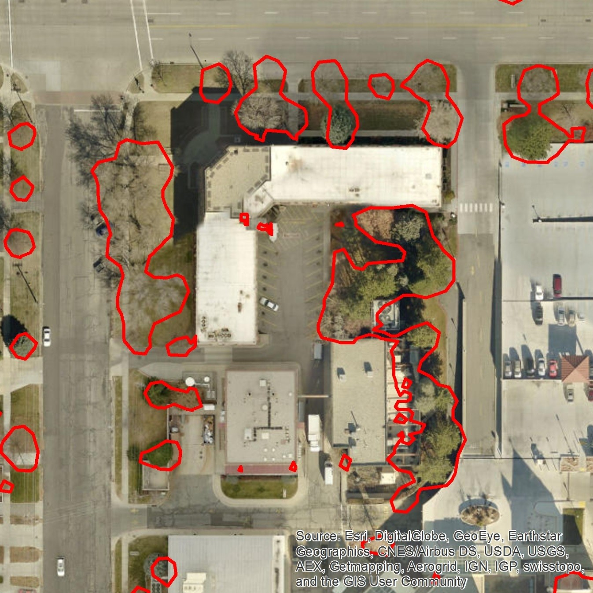
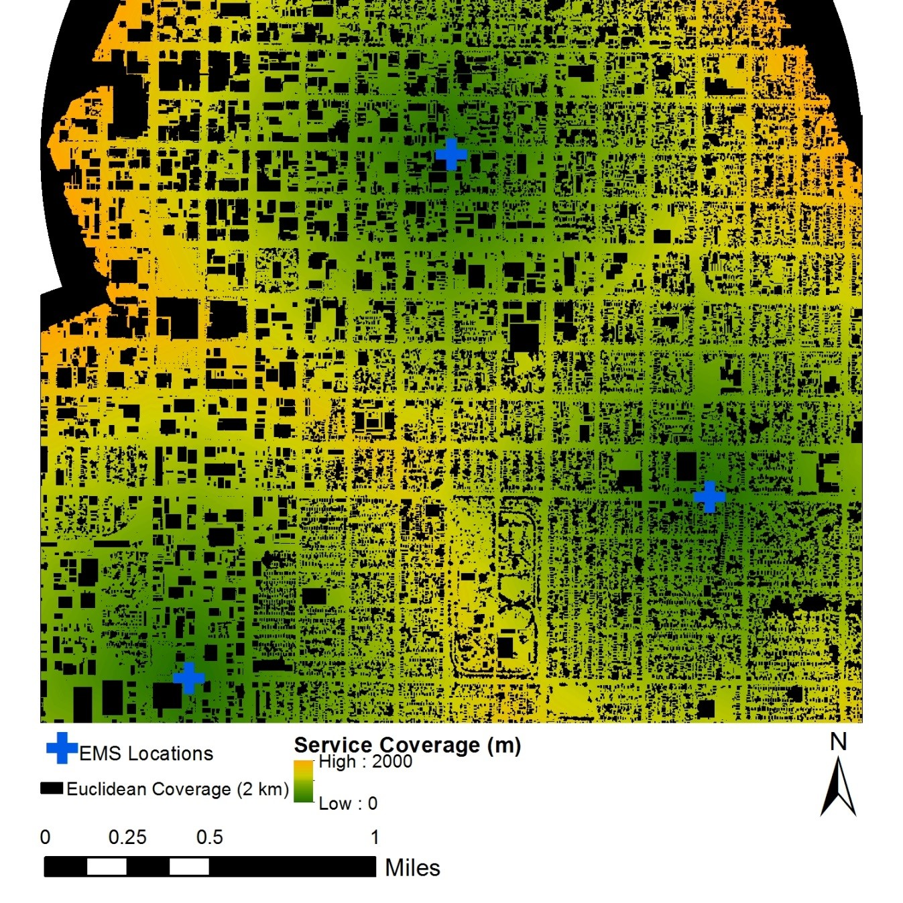
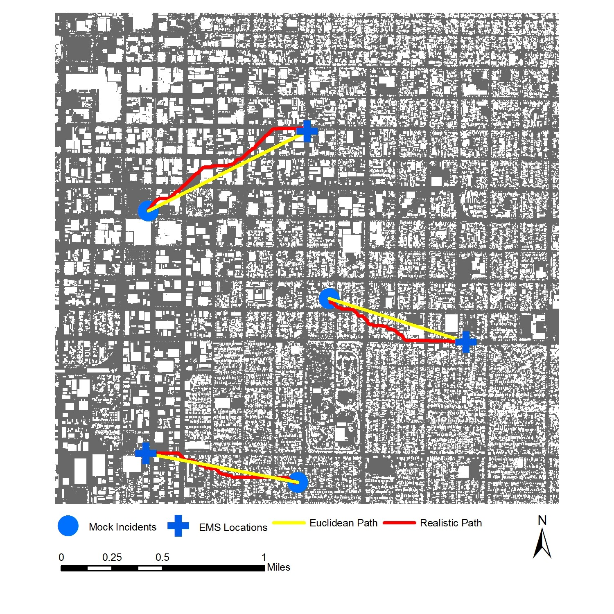

Results
As seen below, the majority of buildings were successfully detected. Since a ground-truth dataset of buildings was not available, no accuracy statistics are provided. However, by examining the aerial imagery, some errors can be found. As seen in the center of Figure 3, there is a section of grass that is classified as a building. This is the result of the bounding box, which assumes that all buildings are rectangular. There are very few false positives (detecting a building when a building is not present), and some false negatives (a building that should have been detected but was not).
Trees were also successfully detected. Unfortunately, there was no ground-truth tree data to compare my results with. However, by examining Figure 4, most trees appear to be detected. Since the aerial imagery and the LIDAR data do not match up temporally, it is difficult to tell if there are over-estimates or under-estimates of trees. There are some small polygons that clearly do not represent trees but generally they represent small obstacles on or near buildings.
The derived service areas are shown below. Greener areas represent areas closer to EMS stations. Black areas represent areas that were served before obstacles were included in the generation of service areas. There is a clear reduction in the range of service of medical drones when obstacles are avoided. It is worth noting that it is unlikely that a drone will maintain top speed as it avoids obstacles, leading to an over-estimation of the distance a drone can fly within 1 minute.
The figure below shows estimated paths taken by a drone flown a few meters off of the ground from three EMS stations to 3 simulated incidents. The yellow lines, are the ideal naïve paths that do not consider any obstacles. The red lines show the paths taken by drones to avoid trees and buildings. As expected, each path that considered obstacles resulted in a longer flight distance (Table 1). In best case scenarios, such as flying along a road, the difference is negligible since there are few, if any obstacles. However, in most cases, the drone will have to fly around trees and buildings experiencing a significant drop in service coverage.

Identified buildings

Identified trees

Path cost analysis

Path planning differences
| Path | Euclidean Distance (m) | Realistic Distance (m) | Difference (m) |
|---|---|---|---|
| 1 | 1407.6 | 1557.9 | 150.3 |
| 2 | 1137.1 | 1250.8 | 113.7 |
| 3 | 1225.7 | 1298.3 | 72.6 |